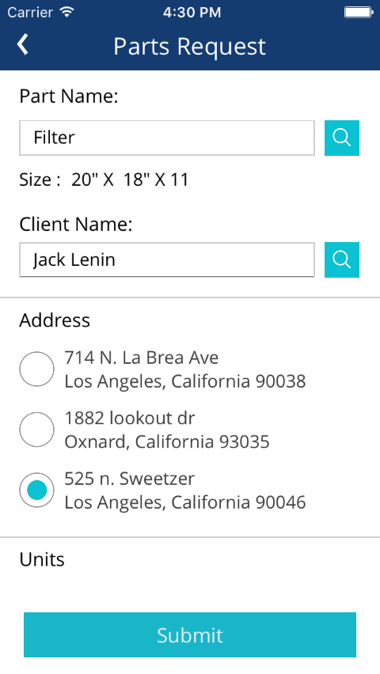
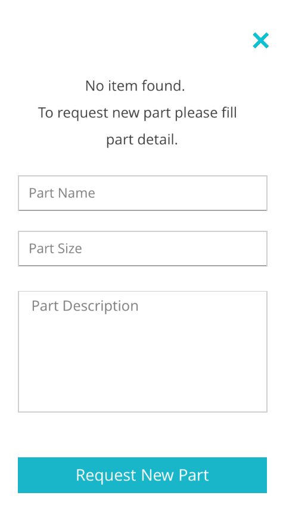

Employee Part Request
• All the parts requested by admin or employee will be displayed in this section.
• Admin can search through the part type, status, Employee name, part name etc.
• Listing will be shown according to the part status i.e. 1. Need to order 2. Back order 3. Cancelled 4. Completed
• Part with status "Need to order" will be displayed in red color.

o The fields marked (*) are compulsory.
Field |
Function |
Employee Name (*): |
Name of employee. |
Part Name (*): |
Name of the part which needs to be requested. This will be a searchable field. |
Quantity (*): |
Quantity of part that needs to be requested. |
Part Size (*): |
Size of part. If entering a new part request, this field choice will include Not Applicable (blank) in case size is not applicable. |
Part Description: |
If the part doesn’t exist in the system, while submitting a part request an employee can provide details about the part in this description field |
Status (*): |
Status of the part. There are two types of status:
Note: When multiple parts are requested, admin will update the status of request once all parts with specified quantity are ready. Request view will show all requested items in one screen. Once admin will update the status to “Completed” all parts will be assigned & added into single service. |
Notes: |
The warehouse manager/ admin can add their notes if the requested part status they are changing to backordered / discontinued. |

• Employee or admin can add the part of inventory or non-inventory type.
1) Part found and quantity of the part available in the system:
• Admin or employee requests the part, the part quantity will be deducted from the in-stock quantity and added into the reserved quality.
• The employee who will request the part, the service to fit that part will be assigned to that employee only as the earliest time slot.
• The service for the requested part will be added to the Pending section of the service with the status of “continuing previous service”. After scheduler run the timing will be assigned and send the approval request to the client.
• If the part stock is available in the system then service will be generated automatically and completed status will be attached to that part
• If the part is not in the stock then part with status “Need to order” will be there.
•Warehouse manager will arrange the part and manually update its status to “Completed”. Then after scheduler will run and its service will be generated automatically.
• The employee will generate the order of the requested part after fitting up the part to get the payment of that part.
• After generating the order of the part, the client will get the notification that employee has purchased a part for the client.
• The client can give payment using CC or Check. If the part is available in the system then the employee can search and request the part from the employee application.
2) Part is not exist in the system:
• If part is not exists in the system the this screen will be displayed to the employee.
• If the requested part not exist in the system then new part will be added in the part section with all quantities with 0 except the reserved quantity.
• The requested part quantity will go under the reserved quantity.At that time part has the status “Need to order”. Warehouse manager will purchase & receive that part and enter its quantity under the “Receive Quantity” and manually update the part status to completed then its service will be added into the pending section with “continuing previous service” status. next time scheduler runs and client will be asked to approve the service.
• The quantity of the arranged part will be added in the initial quantity and remaining quantity will be calculated based on the number of parts.

3) Non inventory part is requested:
• If the part that does not exist in the system but managed and purchased by the admin or warehouse manager will be treated as non-inventory part.
• Requested part quantity will go under the reserved quantity and have a status “Need to order”. Warehouse manager will purchase and arrange the part and manually update the status to “Completed” and then after service will be scheduled automatically same as the part found and quantity available in the system.
• In stock quantity of the part will be entered according to these formulae:
• If In stock is 0 then: in stock qty = Receive qty - Reserved qty.
• If In stock is > 0 then : in stock qty = In stock qty + Receive qty.
Created with the Personal Edition of HelpNDoc: Free iPhone documentation generator